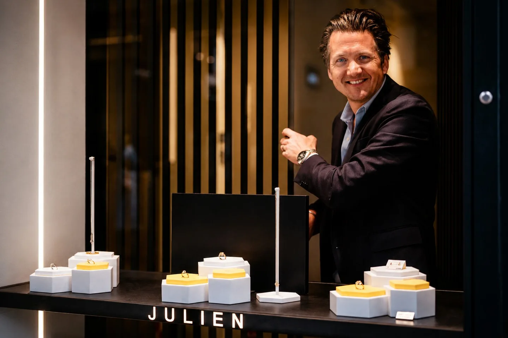
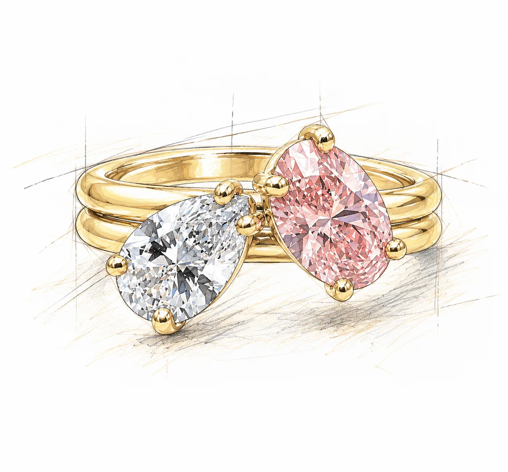
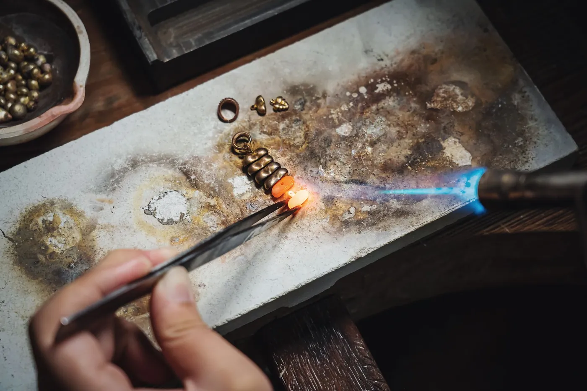
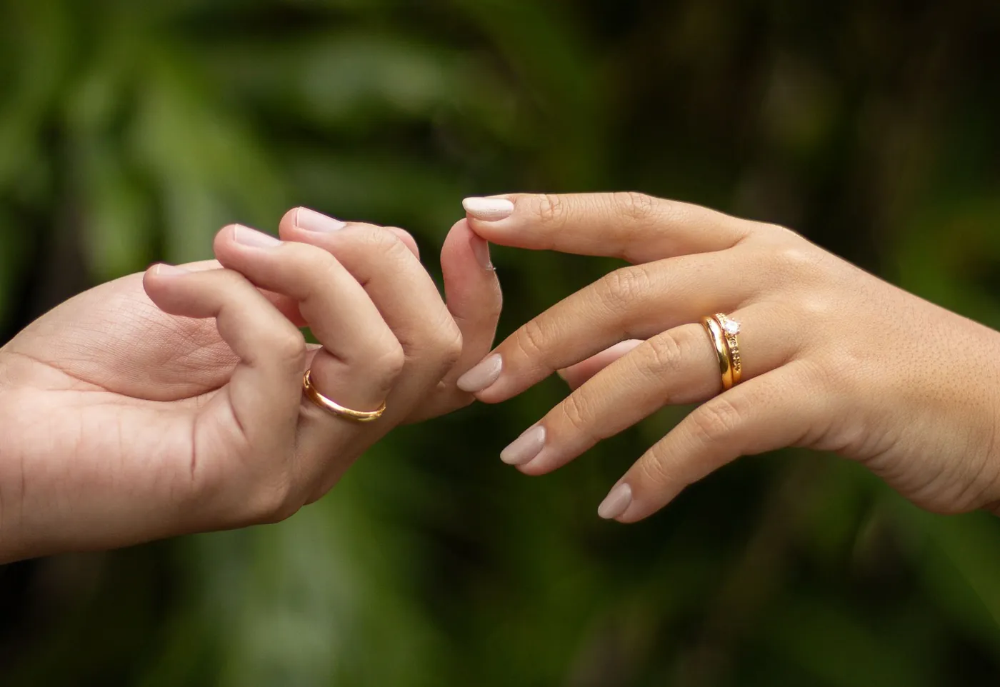

Meet the Goldbot
Een robot in geel goud, met een groene diamant als hart.

Verlovingsringen, trouwringen en juwelen met een gekleurde diamant. Eerst tekenen we het samen uit, daarna maak ik het met de hand in mijn eigen atelier. Voor jou, en voor niemand anders.

Sinds 2011 maak ik juwelen in Gent. Na al die jaren heb ik nog altijd evenveel goesting om te maken, te groeien en te doen wat ik het liefst doe. Wat je bij mij koopt, komt niet uit een catalogus.
JulienGoudsmid, Vogelmarkt 8

Je vertelt wat je zoekt, of waar je over twijfelt. Een verlovingsring, jullie trouwringen, iets voor jezelf.

Ik teken je juweel eerst uit, zodat je ziet wat het wordt. Klopt het, dan gaan we verder.

Daarna maak ik het met de hand. Eén keer, en enkel voor jou.
Ik volg geen regels: waar ik goesting in heb, dat maak ik. Een robotje met een diamanten hart, de draak van het Belfort op je mouw. Stukken die je nergens anders vindt.
Een robot in geel goud, met een groene diamant als hart.

In wit goud, met een ovale diamant. A little mechanical, a little human.

In zilver, met de draak die al eeuwen over Gent waakt.

Kleine oorknopjes in goud met diamantjes.

Maar over het lepeltje met de Belfortdraak. Koffie wordt hier serieus genomen.


Wit is mooi, kleur is goesting. Een roze, blauwe, groene of gele diamant. Naast een witte steen in een toi et moi, of helemaal alleen op een slanke band. Niets gevonden in jouw tint? Dan beginnen we bij een schets.

Een greep uit de collectie, zoals in mijn webshop en btw inbegrepen. Het goud, de maat en de afwerking kiezen we samen. Verlovingsringen maak ik op maat, van schets tot ring.
Ringen passen doe je best in de winkel. Laten we een datum prikken.
“Ontzettend goed ontvangen en geholpen door de meest gepassioneerde juwelier uit Gent en omstreken.”Paulien Cardinaels, op Google
Julien heeft ons fantastisch geholpen met de keuze voor een ring. Een absolute aanrader voor wie een persoonlijke aanpak wil.Stijn Van DaeleGoogle
We waren op zoek naar de perfecte verlovingsring en dankzij het deskundig advies, geduld en oog voor detail hebben we die gevonden.Stijn De RuddereGoogle
Julien is een man waarbij je zijn passie voelt in zijn handgemaakte juwelen. Mijn man en ik hebben onze trouwring bij hem gekocht.Brent MarilineGoogle


Hier staat mijn werkbank, hier ontmoet ik zoveel fijne mensen. Loop binnen, of stuur me eerst een berichtje zodat ik tijd voor je maak.
Vogelmarkt 8, 9000 Gent
09 233 38 44 · @julien_jewelry_
Ik maakte deze demo voor u om te tonen wat er kan. Na een kort gesprek maak ik er iets veel persoonlijkers van, helemaal naar uw wens.
Vrijblijvend. Ik kom langs of we bellen.
Op maat, op uw eigen domein.
Geen voorschot. U betaalt pas als alles klaar is.
Hosting, domeinnaam en kleine wijzigingen, zoals nieuwe openingsuren.
Omdat een voorbeeld meer zegt dan een mail. Zo ziet u meteen wat er kan, en het kost u niets.
Nee. Het gesprek is vrijblijvend. Vindt u het niks, dan is het daarmee gedaan.
Na ons gesprek staat uw site binnen 10 tot 14 dagen online.
Zeker. Uw domeinnaam kan gewoon blijven, de nieuwe site komt in de plaats van de oude.
Nee, dat doe ik op basis van ons gesprek. Eigen foto's zijn mooi meegenomen, maar niet nodig om te starten.